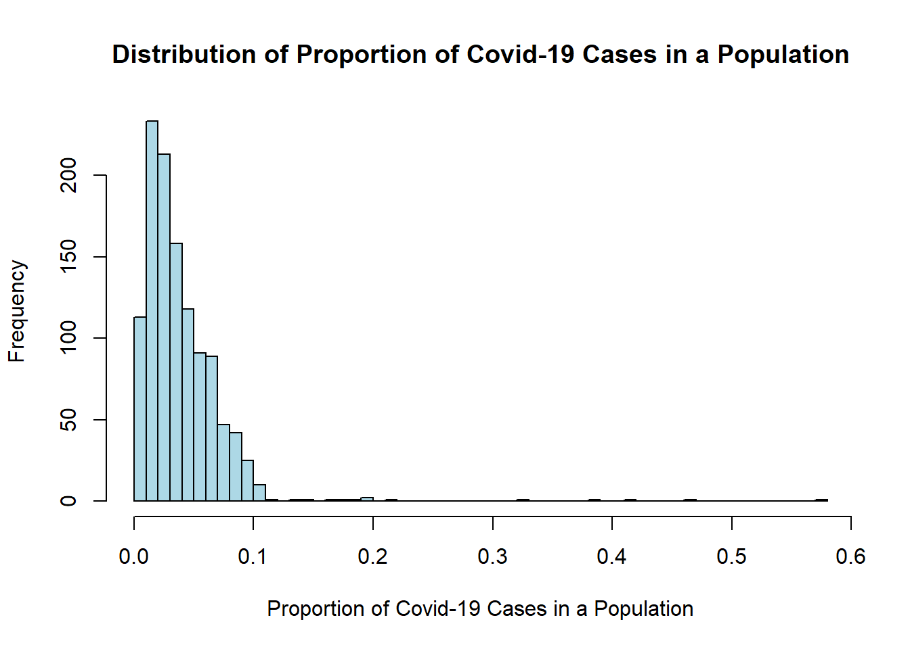
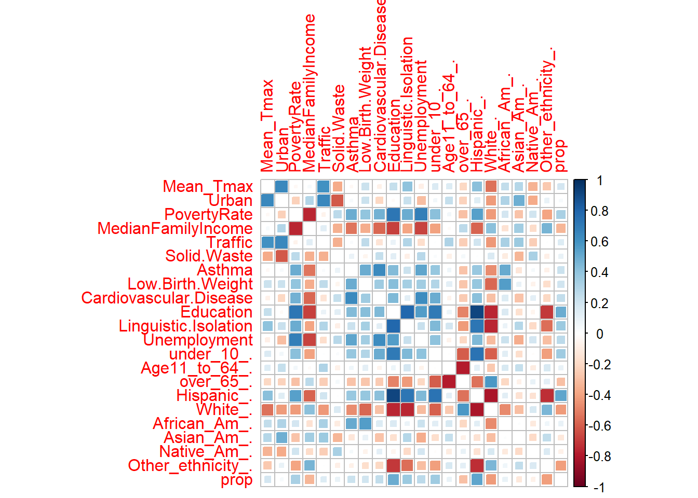
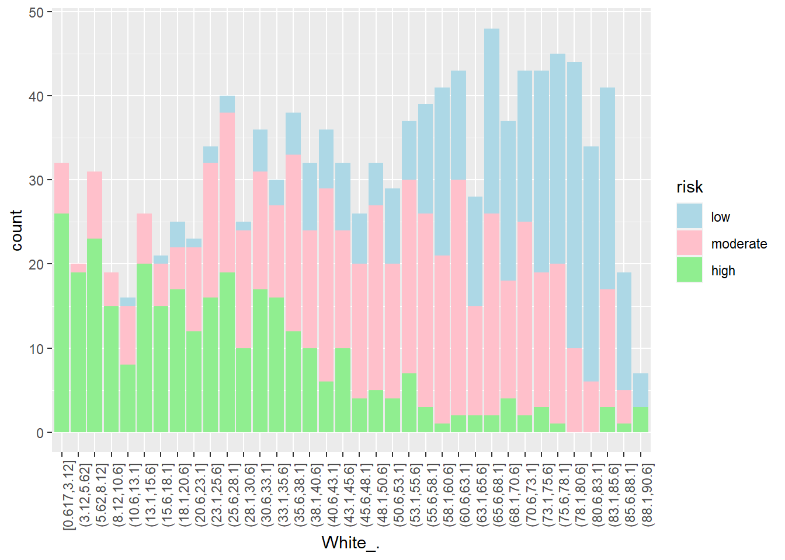
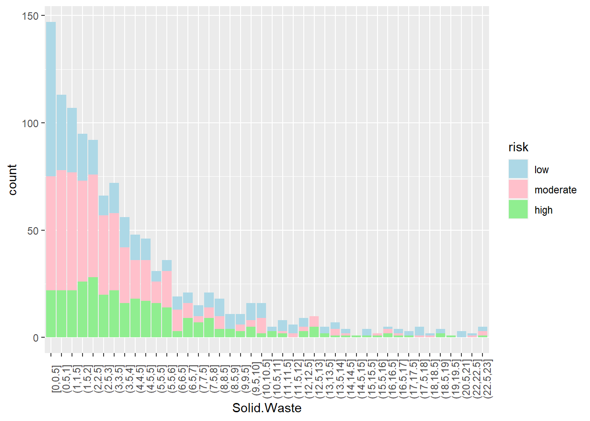
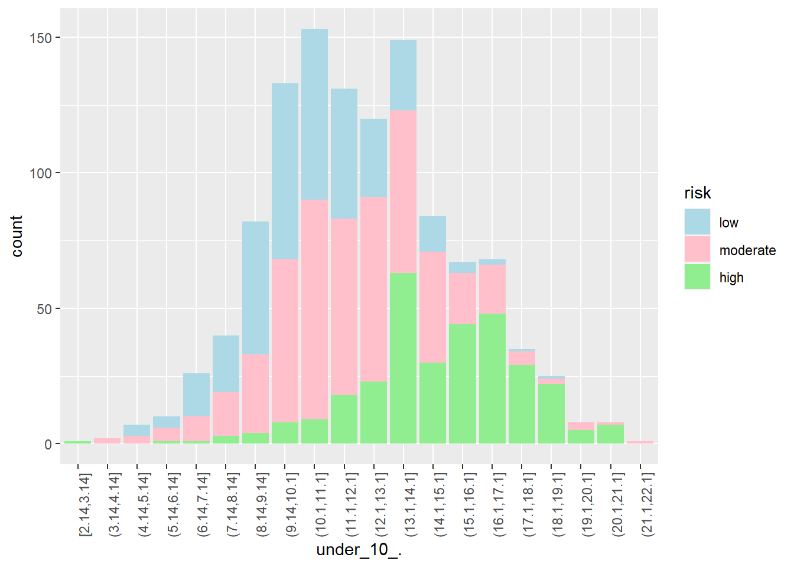
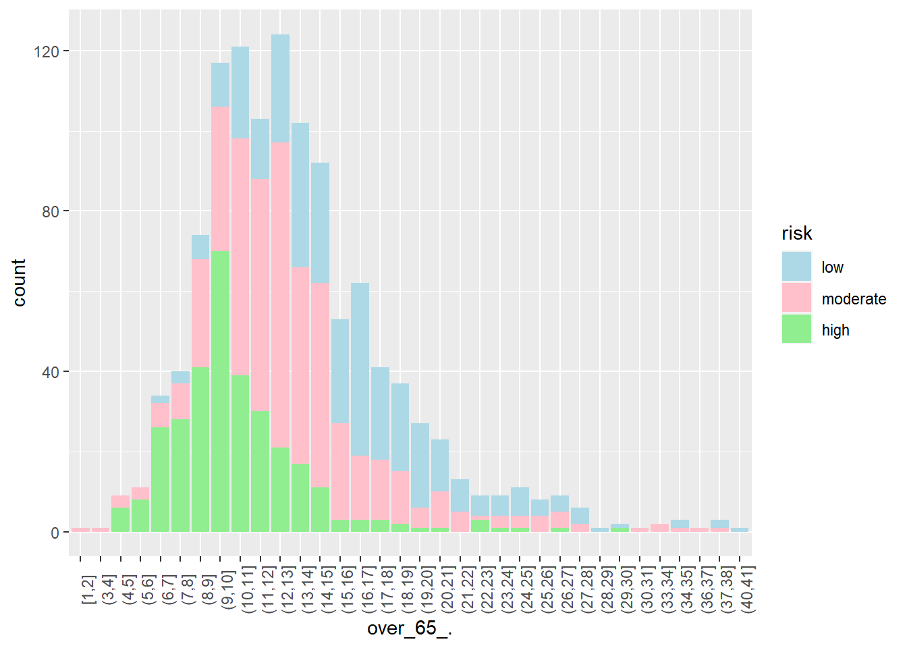
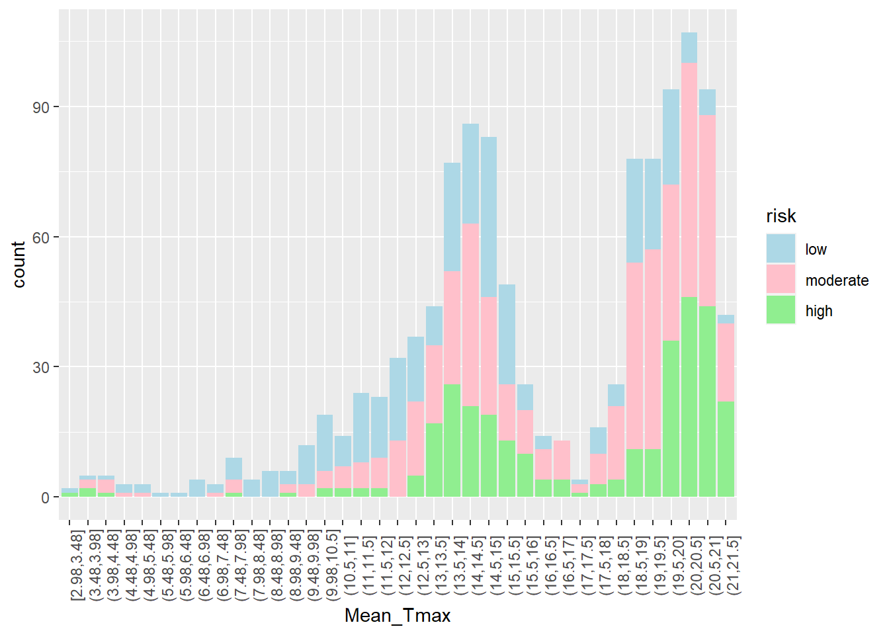
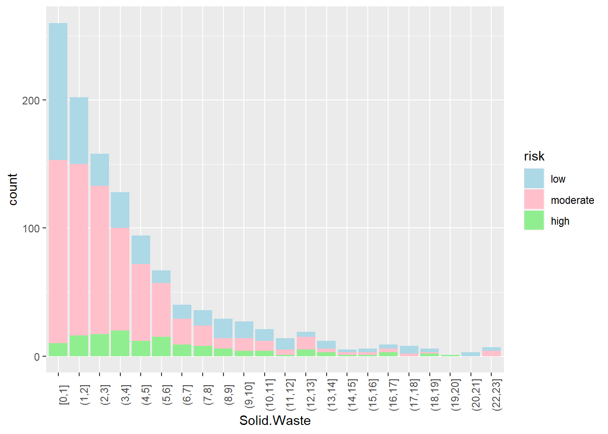
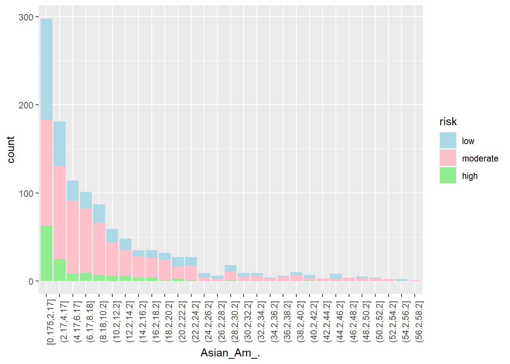

library(corrplot) # for the correlation plot
library(discrim) # for linear discriminant analysis
library(corrr) # for calculating correlation
library(knitr) # to help with the knitting process
library(MASS) # to assist with the markdown processes
library(tidyverse) # using tidyverse and tidymodels for this project mostly
library(tidymodels)
library(ggplot2) # for most of our visualizations
tidymodels_prefer()
library(ISLR) # For the Smarket data set
library(ISLR2) # For the Bikeshare data set
library(poissonreg)
library(klaR) # for naive bayes
library(randomForest)Building a Predictive Model on Covid-19 Cases
Using Machine Learning Models to Predict Covid-19 Outbreak Risk in Californian Cities
Introduction
This project is intended to build and deploy a machine learning classification model which categorizes California zip codes into low, moderate, or high risk for Covid-19 outbreaks by the end of the year of 2020. Risk predictions of Covid-19 were made using 30 different predictors including socioeconomic factors, and abiotic factors such as temperature, and pollution indicators. This project originates from a personal interest in public health and previous studying done on disease dynamics.
Packages and Libraries:
What is Covid-19?
Coronavirus disease (COVID-19) is an infectious disease caused by the SARS-CoV-2 virus. Most people infected with the virus will experience mild to moderate respiratory illness and recover without requiring special treatment. Some people become seriously ill and require medical attention. Older people and those with underlying medical conditions are more likely to develop serious illness and hospitalizaton. COVID-19 can affect people of all ages, including death. The virus can spread from an infected person’s mouth or nose in small liquid particles when they cough, sneeze, speak, sing or breathe. These particles range from larger respiratory droplets to smaller aerosols.
https://www.who.int/health-topics/coronavirus#tab=tab_1
My Data
The data set used for this research project was provided to me by a faculty member, Dr. Andrew MacDonald, who I had the opportunity to work under this summer during an undergraduate research internship. Dr. MacDonald merged data from the LA Times on socioeconomic factors and food access for different Californian zip codes with data reflecting Covid-19 case counts, weather, and pollution levels from the same zip codes during the Covid-19 pandemic in 2020. The original data set contained 273 columns of data.
Predictor Variables:
Mean_Max: Highest recorded temperature in degrees Celsius.Urban: Flag for urban tract.PovertyRate: Share of the tract population living with income at or below the Federal poverty thresholds for family size.MedianFamilyIncome: Tract median family income.Traffic: Traffic density, in vehicle-kilometers per hour per road length, within 150 meters of the census tract boundary.Sold.Waste: Sum of weighted solid waste sites and facilities (SWIS) within buffered distances to populated blocks of census tracts.Asthma: Age-adjusted rate of emergency department visits for asthma.Low.Birth.Weight: Percentage of low birth weights.Cardiovascular.Disease: Age-adjusted rate of emergency department visits for heart attacks per 10,000.Education: Percent of population over 25 with less than a high school education.Linguistic.Isolation: Percent limited English speaking households.Unemployment: Percent of the population over the age of 16 that is unemployed and eligible for the labor force.under_10_.: Percent of the population of the age 10 or younger.Age11_to_64_.: Percent of the population between the ages 11 and 64.over_65_.: Percent of the population of the age 65 or older.Hispanic_.: Percent of the population that is Hispanic.White_.: Percent of the population that is White.African_Am_.: Percent of the population that is African American.Asian_Am_.:Percent of the population that is Asian American.Native_Am_.: Percent of the population that is Native AmericanOther_ethnicity_.: Percent of the population that belongs to an ethnic group not identified above.
Research Questions
- What factors of a population have underlying effects on the number of Covid-19 Cases?
- What kinds of populations are at higher risk for Covid-19 outbreaks?
- Is there evidence of socioeconomic correlation with higher Covid-19 rates?
- Is there evidence of pollution level effects on Covid-19 rates?
Exploratory Data Analysis
The original data set used for this project contained 55,620 observations of 268 variables. In the beginning stages of this project, this data set was tidied, cleaned, and reduced to fewer variables. In the following sections we’ll explore the distribution of our response variable “outbreak risk” and look at visualizations of key predictor distributions and relationships between predictors and case counts of Covid-19.
Loading and Exploring Raw Data
The pandemic data set is stored in a .csv format and can be read in from the directory:
Dimensions of the data:
[1] 55620 270This is a very large data set with 270 variables, all of which are not necessary. The variable labeled “confirmed_cases” will be the focus of our predictions. This column contains the cumulative number of positive Covid-19 cases per week in each zip-code during the 2020 year. The data set also contains a variable labeled “new_cases” which contains the new number of positive Covid-19 cases per week during the 2020 year. We can explore these two variables:
Cumulative Cases throughout 2020:


New Cases each week of 2020:

Here we can see that there was a rise in cases around weeks 26 to 35 which are the months June through August and then there is another spike following week 46 which is about halfway through November to the rest of the year right around the winter holidays.
Converting Cumulative Cases into Proportions of Population for a Classification Model
My initial plan for this project was to build a regression model which predicted continuous case counts by the end of 2020 for each zip code. However, I decided to take this a step further and build a classification model which categorized zip codes into low, moderate, or high risk for a Covid-19 outbreak. Covid-19 cumulative case numbers are highly positively correlated with population so I decided to make a new column in the data set of the proportion of a population which has tested positive for Covid-19 by the end of the year 2020.

Log Transformation:


Choosing Splits for Low, Moderate, and High Risk for Covid-19 Outbreak:
As I was choosing a suitable split for what would be considered low, moderate, or high risk I looked for any visible distinctions in the histogram of the proportions distribution. Looking at the histogram of proportions above, I was able to identify a high split at 0.07, or 7%. For the low split, I thought the mode or peak would be a good split which happens to be about 0.02 or 2%. Following this, I then created a variable called “risk” where I classified proportions in each of these intervals into low, moderate, and high risk.
low moderate high
0.30 0.58 0.12 There is some class imbalance with only 12% of the observations being categorized as high risk, so all models will be stratified on this variable to avoid any prediction problems.
Correlation Between Variables:
Warning: Use of bare predicate functions was deprecated in tidyselect 1.1.0.
ℹ Please use wrap predicates in `where()` instead.
# Was:
data %>% select(is.numeric)
# Now:
data %>% select(where(is.numeric))
This correlation plot tells us a lot of information about the linear relationships between our predictor variables. In particular I found great interest in the high correlations Poverty Rate and Median Family Income had with the following predictor variables: Asthma, Low Birth Weight, Cardiovascular Disease, Education, Linguistic Isolation, Unemployment, Percentage of Population being under 10 years of age, Percentage of Population being Hispanic, and Percentage of Population being White. Three of these variables include medical conditions such as Asthma, Low Birth Weight, and Cardiovascular Disease so I decided to visualize each of these conditions’ relationships with Poverty Rate.
Mean Asthma and Poverty Rate

Mean Low Birth Weight and Poverty Rate


Mean Cardiovascular Disease and Poverty Rate:
Variable Importance:
Distribution of Risk Levels for Different Predictor Variables:
Hispanic:

Education:

Other Ethnicity:

White:

Linguistic Isolation:

Median Family Income:

Poverty Rate:

Asthma:

Low Birth Weight:

Cardiovascular Disease:

Unemployment:

Solid Waste:

Asian American:

Urban:
Under 10:

Between 11 and 64:

Over 65:

Data Splitting:
When fitting the pandemic data to my machine learning models, I need to split the data into a training and testing/validation set. This allows the models to be trained on a random subset of the data in order to build predictions. Once trained on the training set, each of the models are then used to create predictions on the testing/validation set in order to get a measure of the models’ accuracies for making predictions on new data. The training and testing validation approach gives us an estimate on how the models will perform on new data the models haven’t seen yet. In order to split our data into training and testing sets we used a random seed and I have decided to make the proportion of split 70% for the training data and 30% for the testing data. Another important factor in splitting the data is identifying what to stratify the split on, which in my case is the response variable “risk”. As seen in the exploratory analysis, my response variable “risk” is divided into three categories or classes: low, moderate, and high, however there is not an evenly distributed number of observations of each of these classes. According to the exploratory analysis 38% of the responses are low, 50% of the responses are moderate, and only 12% of the responses are high. This class imbalance may result in my models having low predictive power for accurately classifying high and possibly even low risk areas. Stratifying on the risk variable avoids the possibility of a disproportionate amount of high risk observations ending up in the training or testing sets, so after stratifying, both the training and testing sets should have the same 38%, 50%, and 12% distribution of each class.